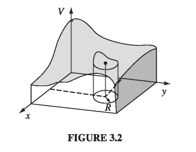

3.1: Laplace's Equation
3.1.1: Introduction
The primary task of electrostatics is to find the electric field of a given stationary charge distribution. In principle, this purpose is accomplished by Coulomb's law, in the form of
Unfortunately, integrals of this type can be difficult to calculate for any but the simplest charge configurations. Occasionally we can get around this by exploiting symmetry and using Gauss's law, but ordinarily the best strategy is first to calculate the potential, V, which is given by the somewhat more tractable
Still, even this integral is often too tough to handle analytically. Moreover, in problems involving conductors itself may not be known in advance; since charge is free to move around, the only thing we control directly is the total charge (or perhaps the potential) of each conductor.
In such cases, it is fruitful to recast the problem in differential form, using Poisson's equation
which, together with appropriate boundary conditions, is equivalent to . Very often, in fact, we are interested in finding the potential in a region where . (If everywhere, of course, then , and there is nothing further to say - that's not what I mean. There may be plenty of charge elsewhere, but we're confining our attention to places where there is no charge.) In this case, Poisson's equation reduces to Laplace's equation
or, written out in Cartesian coordinates,
This formula is so fundamental to the subject that one might almost say electrostatics is the study of Laplace's equation. At the same time, it is a ubiquitous equation, appearing in such diverse branches of physics as gravitation and magnetism, the theory of heat, and the study of soap bubbles. In mathematics, it plays a major role in analytic function theory. To get a feel for Laplace's equation and its solutions (which are called harmonic functions), we shall begin with the one- and two-dimensional versions, which are easier to picture, and illustrate all the essential properties of the three-dimensional case.
3.1.2: Laplace's Equation in One Dimension
Suppose V depends on only one variable, x. Then Laplace's equation becomes
The general solution is
the equation for a straight line. It contains two undetermined constants (m and b), as is appropriate for a second-order (ordinary) differential equation. They are fixed, in any particular case, by the boundary conditions of that problem. For instance, it might be specified that at and at . In that case, and , so (See Fig. 3.1)
I want to call your attention to two features of this result; they may seem silly and obvious in one dimension, where I can write down the general solution explicitly, but the analogs in two and three dimensions are powerful and by no means obvious:
-
V(x) is the average of and for any a:
Laplace's equation is a kind of averaging instruction; it tells you to assign to the point x the average of the values to the left and to the right of x. Solutions to Laplace's equation are, in this sense, as boring as they could possibly be, and yet fit the end points properly.
-
Laplace's equation tolerates no local maxima or minima; extreme values of V must occur at the end points. Actually, this is a consequence of (1), for if there were a local maximum, V would be greater at that point than on either side, and therefore could not be the average. (Ordinarily, you expect the second derivative to be negative at a maximum and positive at a minimum. Since Laplace's equation requires, on the contrary, that the second derivative is zero, it seems reasonable that solutions should exhibit no extrema. However, this is not a proof, since there exist functions that have maxima and minima at points where the second derivative vanishes: for example, has such a minimum point at ).
3.1.3: Laplace's Equation in Two Dimensions
If V depends on two variables, Laplace's equation becomes
This is no longer an ordinary differential equation (that is, one involving ordinary derivatives only); it is a partial differential equation. As a consequence, some of the simple rules you may be familiar with do not apply. For instance, the general solution to this equation doesn't contain just two arbitrary constants - or, for that matter, any finite number - despite the fact that it's a second order equation. Indeed, one cannot write down a "general solution" (at least, not in a closed form like ). Nevertheless, it is possible to deduce certain properties common to all solutions.

It may help to have a physical example in mind. Picture a thin rubber sheet (or a soap film) stretched over some support. For definiteness, suppose you take a cardboard box, cut a wavy line all the way around, and remove the top part (Fig. 3.2). Now glue a tightly stretched rubber membrane over the box, so that it fits like a drum head (it won't be a flat drumhead, of course, unless you choose to cut the edges off straight). Now, if you lay out the coordinates (x, y) on the bottom of the box, the height V(x, y) of the sheet above the point (x, y) will satisfy Laplace's equation. (The one-dimensional analog would be a rubber band stretched between two points. Of course, it would form a straight line.)
Actually, the equation satisfied by a rubber sheet is ```math \frac{\partial}{\partial{x}} \left( g \pdv{V}{y} \right) + \frac{\partial}{\partial{y}} \left( g \pdv{V}{y} \right) = 0, \ \qquad \text{ where } g = \left[ 1 + \left( \pdv{V}{x} \right)^2 + \left( \pdv{V}{y} \right)^2 \right]^{-1/2}
Harmonic functions in two dimensions have the same properties we noted in one dimension:
- The value of V at a point (x, y) is the average of those around the point. More precisely, if you draw a circle of any radius R about the point (x, y), the average value of V on the circle is equal to the value at the center:
V(x, y) = \frac{1}{2 \pi R} \oint_{\text{circle}} = V \dd{l}
(This, incidentally, suggests the method of relaxation, on which computer solutions to Laplace's equation are based: Starting with specified values for V at the boundary, and reasonable guesses for V on a grid of interior points, the first pass reassigns to each point the average of its nearest neighbors. The second pass repeats this process, using the corrected values, and so on. After a few iterations, the numbers begin to settle down, so that subsequent passes produce negligible changes, and a numerical solution to Laplace's equation, with the given boundary values, has been achieved.)
- V has no local maxima or minima; all extrema occur at the boundaries. (As before, this follows from (1)). Again, Laplace's equation picks the most featureless function possible, consistent with the boundary conditions: no hills, no valleys, just the smoothest conceivable surface. For instance, if you put a ping-pong ball on the stretched rubber sheet of Fig 3.2, it will roll over to one side and fall off - it will not find a "pocket" somewhere to settle into, for Laplace's equation allows no such dents in the surface. From a geometrical point of view, just as a straight line is the shortest distance between two points, so a harmonic function in two dimensions minimizes the surface area spanning the given boundary line.
3.1.4: Laplace's Equation in Three Dimensions
In three dimensions I can neither provide you with an explicit solution (as in one dimension) nor offer a suggestive physical example to guide your intuition (as I did in two dimensions). Nevertheless, the same two properties remain true, and this time I will sketch a proof.
For a proof that does not rely on Coulomb's law (only on Laplace's equation), see Prob. 3.37
- The value of V at point r is the average value of V over a spherical surface of radius R centered at r:
- As a consequence, V can have no local maxima or minima; the extreme values of V must occur at the boundaries (For if V had a local maximum at r, then by the very nature of the maximum I could draw a sphere around r over which all the values of V - and a fortiori the average - would be less than at r.)
Proof: V is a solution to the three-dimensional Laplace's equation. Then the value of V at point r is the average value of V over a spherical surface of radius R centered at r
Let's begin by calculating the average potential over a spherical surface of radius R due to a single point charge q located outside the sphere. We may as well center the sphere at the origin and choose coordinates so that q lies on the z-axis (Fig 3.3).

The potential at a point on the surface is
where
so
But this is precisely the potential due to q at the center of the sphere! By the superposition principle, the same goes for any collection of charges outside the sphere: their average potential over the sphere is equal to the net potential they produce at the center
3.1.5: Boundary Conditions and Uniqueness Theorems
Laplace's equation does not by itself determine V; in addition, suitable boundary conditions must be supplied. This raises a delicate question: What are appropriate boundary conditions, sufficient to determine the answer and yet not so strong as to generate inconsistencies? The one-dimensional case is easy, for here the general solution contains two arbitrary constants, and we therefore require two boundary conditions. We might, for instance, specify the value of the function at each end, or we might give the value of the function and its derivative at one end, or the value at one end and the derivative at the other, and so on. But we cannot get away with just the value or just the derivative at one end - this is insufficient information. Nor would it do to specify the derivatives at both ends - this would be either redundant (if the two are equal) or inconsistent (if they are not).
In two or three dimensions we are confronted by a partial differential equation, and it is not so obvious what would constitute acceptable boundary conditions. Is the shape of a taut rubber membrane, for instance, uniquely determined by the frame over which it is stretched, or, like a canning jar lid, can it snap from one stable configuration to another? The answer, as I think your intuition would suggest, that V is uniquely determined by its value at the boundary (canning jars evidently do not obey Laplace's equation). However, other boundary conditions can also be used (see Prob. 3.5). The proof that a proposed set of boundary conditions will suffice is usually presented in the form of a uniqueness theorem. There are many such theorems for electrostatics, all sharing the same basic format - I'll show you the two most useful ones:
First Uniqueness Theorem: The solution to Laplace's equation in some volume is uniquely determined if V is specified on the boundary surface .
In Fig. 3.5 I have drawn such a region and its boundary. (There could also be "islands" inside, so long as V is given on all their surfaces; also, the outer boundary could be at infinity, where V is ordinarily taken to be zero.)

Proof: Suppose there were two solutions to Laplace's equation:
both of which assume the specified value on the surface. I want to prove that they must be equal. The trick is to look at their difference:
This obeys Laplace's equation (obviously)
and it takes the value zero on all boundaries (since and are equal there). But Laplace's equation allows no local maxima or minima - all extrema occur on the boundaries. So the maximum and minimum of are both zero. Therefore must be zero everywhere, and hence
Example 3.1
Show that the potential is constant inside an enclosure completely surrounded by conducting material, provided there is no charge within the enclosure.
Solution The potential on the cavity wall is some constant (that's item (iv) in Sect. 2.5.1), so the potential inside is a function that satisfies Laplace's equation and has the constant value at the boundary. It doesn't take a genius to think of one solution to this problem: everywhere. The uniqueness theorem guarantees that this is the only solution. (It follows that the field inside an empty cavity is zero - the same result we found in Sect. 2.5.2 on rather different grounds.)
The uniqueness theorem is a license to your imagination. It doesn't matter how you come by your solution; if (a) it satisfies Laplace's equation and (b) it has the correct value on the boundaries, then it's right. You'll see the power of this argument when we come to the method of images.
Incidentally, it is easy to improve on the first uniqueness theorem: I assumed there was no charge inside the region in question, so the potential obeyed Laplace's equation, but we may as well throw in some charge (in which case V obeys Poisson's equation).
Corollary: The potential in a volume is uniquely determined if (a) the charge density throughout the region, and (b) the value of V on all boundaries, are specified
The argument is the same, only this time
so
Once again the difference satisfies Laplace's equation and has the value zero on all boundaries, so and hence
3.1.6: Conductors and the Second Uniqueness Theorem
The simplest way to set the boundary conditions for an electrostatic problem is to specify the value of V on all surfaces surrounding the region of interest. And this situation often occurs in practice: In the laboratory, we have conductors connected to batteries, which maintain a given potential, or to ground, which is the experimentalist's word for . However, there are other circumstances in which we do not know the potential at the boundary, but rather the charges on various conducting surfaces. Suppose I put on the first conductor, on the second conductor, and so on - I'm not telling you how the charge distributes itself over each conducting surface, because as soon as I put it on, it moves around in a way I do not control. And for good measure, let's say there is some specified charge density in the region between the conductors. Is the electric field now uniquely determined? Or are there perhaps a number of different ways the charges could arrange themselves on their respective conductors, each leading to a different field?
Second uniqueness theorem: In a volume surrounded by conductors and containing a specified charge density , the electric field is uniquely determined if the total charge on each conductor is given (Fig. 3.6). (The region as a whole can be bounded by another conductor, or else unbounded.)
Proof: Suppose there are two fields satisfying the conditions of the problem. Both obey Gauss's law in differential form in the space betwen the conductors:
And both obey Gauss's law in integral form for a Gaussian surface enclosing each conductor
Likewise, for the outer boundary (whether this is just inside an enclosing conductor at infinity),
As before, we examine the difference
which obeys
in the region between the conductors, and
over each boundary surface. Now there is one final piece of information we must exploit: Although we do not know how the charge distributes itself over the _i_th conductor, we do know that each conductor is an equipotential, and hence is a constant (not necessarily the same constant) over each conducting surface. (It need not be zero, for the potentials and may not be equal - all we know for sure is that both are constant over any given conductor.) Next comes a trick. Invoking the product rule
Here I have used and . Integrating this over and applying the divergence theorem to the left side:
The surface integral covers all boundaries of the region in question - the conductors and outer boundary. Now is a constant over each surface (if the outer boundary is invinity, there), so it comes outside each integral, and what remains is zero, according to . Therefore
The integrand is never negative, so the only way the integral can vanish is if everywhere. Consequently, and the theorem is proved.
This proof was not easy, and there is a real danger that the theorem itself will seem more plausible to you than the proof. In case you think the second uniqueness theorem is "obvious," consider this example of Purcell's: Figure 3.7 shows a simple electrostatic configuration, consisting of four conductors with charges , situated so that the plusses are near the minuses. It all looks very comfortable. Now, what happens if we join them in pairs, by tiny wires, as indicated in Fig. 3.8? Since the positive charges are very near negative charges (which is where they like to be) you might well guess that nothing will happen - the configuration looks stable.

Well, that sounds reasonable, but it's wrong. The configuration in Fig. 3.8 is impossible. For there are now effectively two conductors, and the total charge on each is zero. One possible way to distribute zero charge over these conductors is to have no accumulation of charge anywhere, and hence zero field everywhere (Fig. 3.9). By the second uniqueness theorem, this must be the solution: The charge will flow down the tiny wires, canceling itself off.